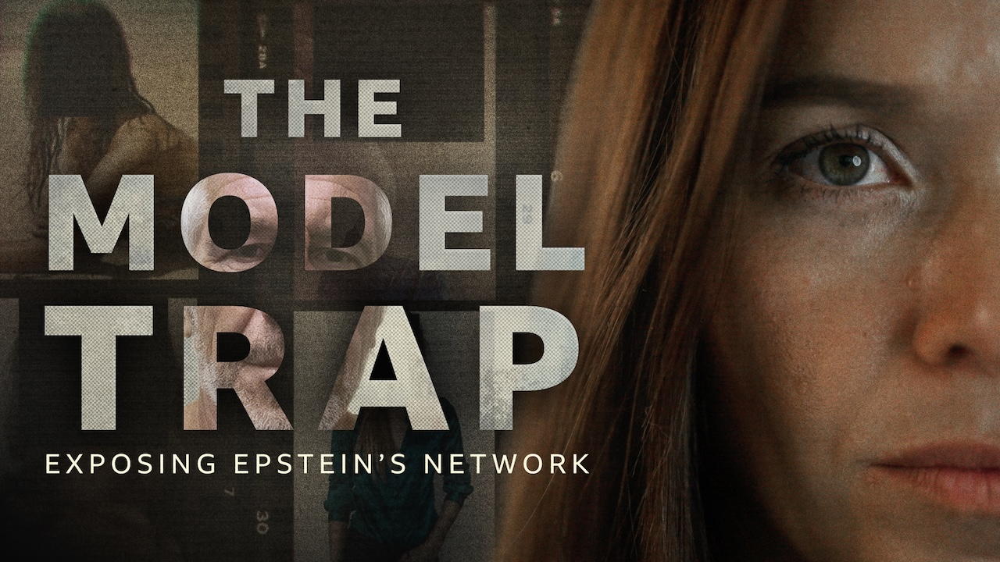
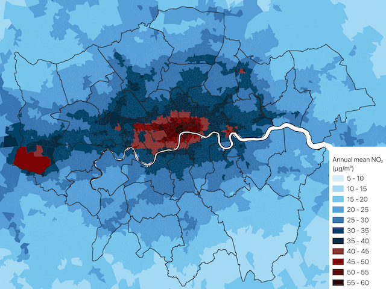
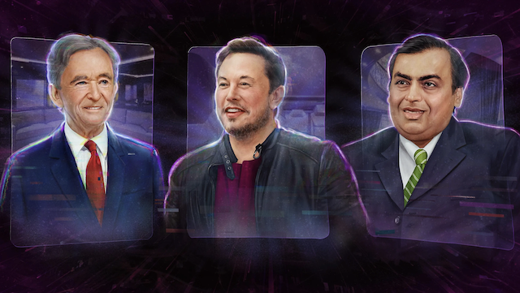
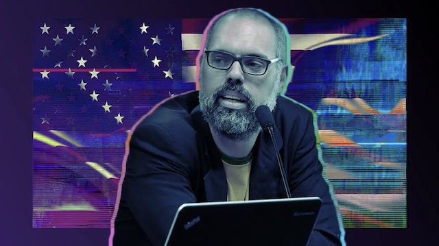

Hello!
My name is Annika Grosser and I’m a computational and investigative journalist based in London.
As part of the BBC News AI team, I pilot AI for the newsroom and build agentic AI solutions for investigative reporting.
I also work with the BBC Eye Investigations department, most recently as OSINT producer on the hour-long documentary The Model Trap: Exposing Jeffrey Epstein’s Network.
Before joining the BBC I lived in New York, where I worked as a wealth reporter on Forbes’ billionaires list, as a misinformation analyst at NewsGuard, and as data reporting lead on an investigative project revealing misconduct in the New York State Police.
I hold a master’s degree from the Columbia University Graduate School of Journalism and a bachelor’s degree in Mass Media and Communication Studies, History and North American Studies from Freie Universität Berlin.
Portfolio

The Model Trap: Exposing Jeffrey Epstein's Network
This hour-long documentary investigates the agency owners and scouts who facilitated Jeffrey Epstein's abuse of young models, many from Eastern Europe.
read more →
'We don't all breathe the same air': How London's pollution gap persists
New BBC analysis found that average NO₂ air pollution has fallen by almost 38% from 2014 to 2024, but geographical inequalities haven’t disappeared. More deprived areas and neighbourhoods with larger non-white populations continue to breathe dirtier air.
read more →Behind the Badge: In New York City Homeless Shelters, the Same ‘Peace Officers’ Abuse Residents
Previously unreleased disciplinary files expose officers who beat, slap, and pepper spray the residents they’re supposed to protect. Most are back at work within a month.
read more →
Forbes World's Billionaires List 2024
Forbes’ annual World’s Billionaires list, involving months of digging through SEC documents and 990 forms, finding billionaires’ real estate holdings and other financial assets, valuing private companies and estimating net worths.
read more →
Fugitive Allan dos Santos sets up a company and creates a new "Terça Livre" in the United States
This investigation reveals how the Brazilian blogger and wanted criminal Allan dos Santos established a company in Florida to revive his Terça Livre media project that was investigated by Brazil's Supreme Federal Court.
read more →Toolkit
Open-source investigation
- Geolocation
- Chronolocation
- Satellite imagery
- Social media monitoring, archiving & verification
- Public databases, lobbying and financial investigation
Data & code
- Python
- Natural language processing (NLP)
- Scraping & APIs
- QGIS
- 3D modelling